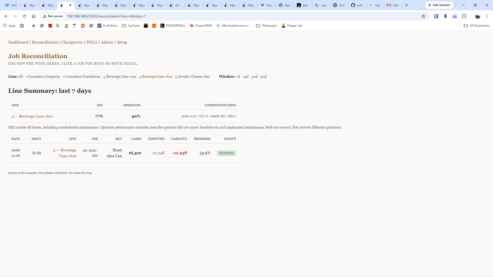
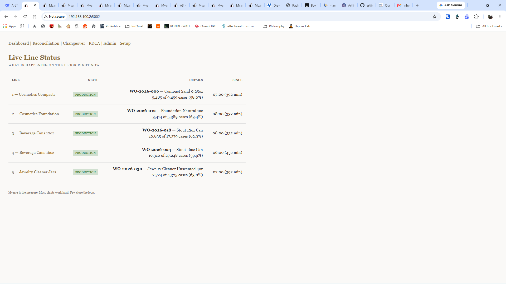
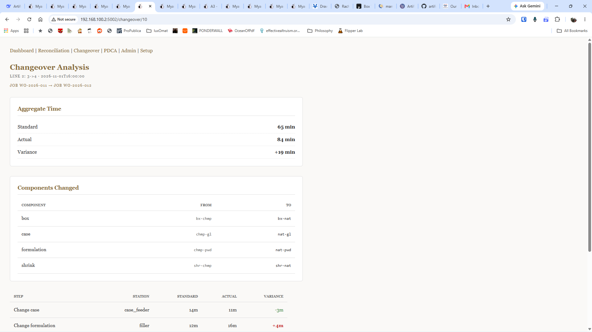
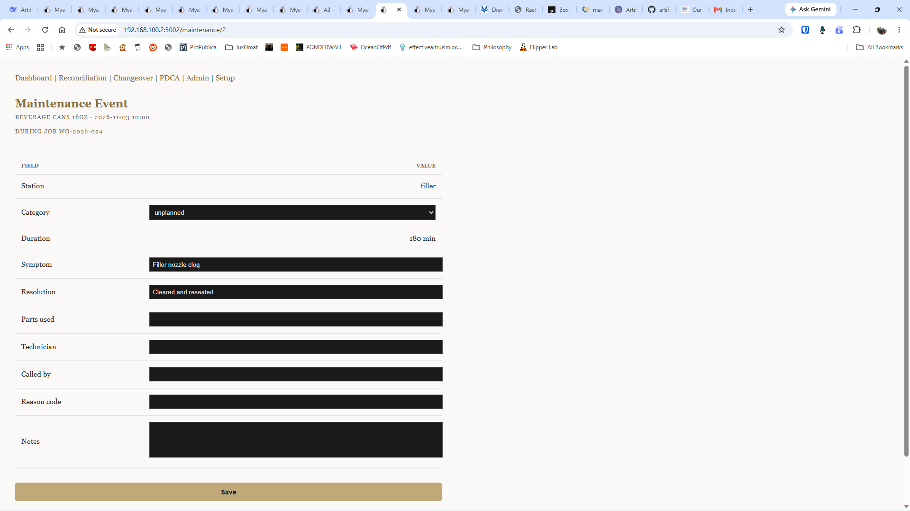
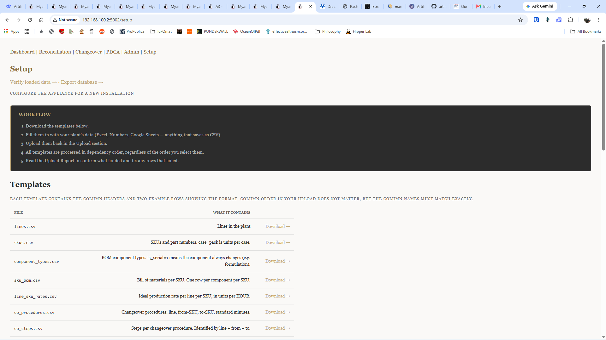

Production to standard.
Measured honestly.
Your OEE number is a fiction. Not because anyone is lying, but because the downtime log only records what someone remembered to write down. The minutes nobody logged are the minutes you can least afford. Myarra computes the residual: expected production, minus actual, minus logged downtime.
Request an assessment Back to Artifexo FabrikaTwo measures, both correct, different questions.
Most systems give you one number and hold the operator responsible for everything in it. If a machine breaks down for three hours, the operator takes the hit in the metric. That teaches him to under-report and corrupts every number downstream.
Myarra reports two numbers. OEE counts every loss: breakdowns, changeovers, scrap, idle time. The number you compare to benchmarks. Operator performance excludes what the operator did not cause. The first is the administrative truth. The second is the floor truth.

Page by page. What you get.





Onboarding. This will be easy.
You do not need a team of consultants to set this up. You need your master data in a spreadsheet. The appliance ships with ten standard CSV templates.
Lines, SKUs, component types, bill of materials, ideal rates, changeover procedures, changeover steps, jobs, users, and settings. Fill them out in Excel, upload them through the web interface, and the system is ready. The uploader checks for errors row by row and refuses to let bad data into the database.

The floor voice.
A line lead types four words. The dashboard updates before the shift ends.
The tool that gets used is the one that fits in a pocket and takes ten seconds. Myarra is not a form. It is a Telegram message.
The lead sends: "running job WO-2026-001, hour 5, 7,000 units, 4 minutes down jam at the filler." The bot replies with a receipt. If the count is implausible, if voice-to-text has eaten a digit and 35,022 has become 3,022, the bot refuses and asks the lead to re-say. A lost digit in a transcript is not a data point, it is a data casualty, and Myarra does not log it.

Request an assessment.
Tell us where to reach you. We will arrange a brief conversation.